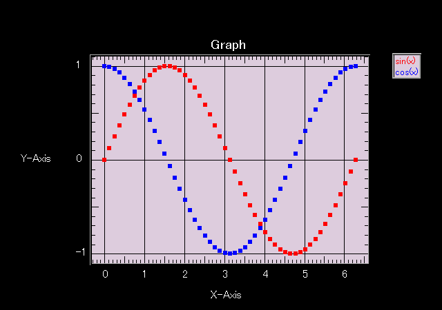

JSGraph

JavaScript が使用できる環境では上のようなグラフが表示されているはずです。
Division:
Min:
Max:
y =
Division:
Min:
Max:
y =
Division:
Min:
Max:
y =
ソース
jsgraph_old.js
特徴
JavaScript で強引にグラフを描画。
IE, Mozilla で動作確認。
比較的簡単な手順でグラフの作成が可能(なつもり)。
キャプションはマウスでドラッグすることにより位置の変更が可能。
グラフをドラッグすることで、グラフ全体の位置を変更可能。
グラフの隅をドラッグすることでグラフサイズの変更が可能。
JavaScript を利用してインタラクティブにグラフの表示を変更可能。
軸ナンバリング部分は現状あまり自信がありません。
動作が遅い。大量のデータを描かせるようなことは考えない方が良いでしょう。
使い方
<script src="jsgraph.js" type="text/javascript"></script>
で jsgraph.js を読み込む。
<div id="mygraph" style="width: 800px; height: 500px;"></div>
等として、グラフ用の領域を確保する。
graph = new JSGraph('mygraph');
で JSGraph オブジェクトを生成。
data = new Data();
で Data オブジェクトを生成。
data.str2data(s, RS, FS);
で値を入力。s をレコードセパレータ RS、フィールドセパレータ FS で配列に変換し、 一番目のフィールドを x データ、二番目のフィールドを y データとして Data オブジェクトに保存します。
data.add_data(x, y);
というメソッドも使用できます。
data.set_color('#0000ff');
data.set_text('Data2');
でデータの描画色、キャプションを指定。
graph.add_data(data);
で JSGraph オブジェクトにデータ追加。
graph.autoscale();
で軸スケールを自動設定します。
グラフのタイトル、x, y 軸のキャプションはそれぞれ
graph.title.set_text("Title");
graph.caption_x.set_text("x");
graph.caption_y.set_text("y");
で変更できます。
graph.draw();
でグラフを描画。
参考文献
久野靖「入門WWW」2000年 ASCII
久野靖「入門JavaScript」2001年 ASCII
履歴
2005/04/01
・ 移動、リサイズの高速化。
・ 動作例更新。
2005/03/29
・ 対数軸対応。
・ 動作例更新。
2003/06/20 Version 0.3
・ autoscale 時のエラーチェックを追加。
・ キャプションなど一部の設定メソッドの統一。
2003/06/19 Version 0.2
・ リサイズ時の座標計算のバグ修正。
・ ステータスラインにマウスポインタのグラフ上の座標を表示するように した。
2003/06/18 初版公開
Return